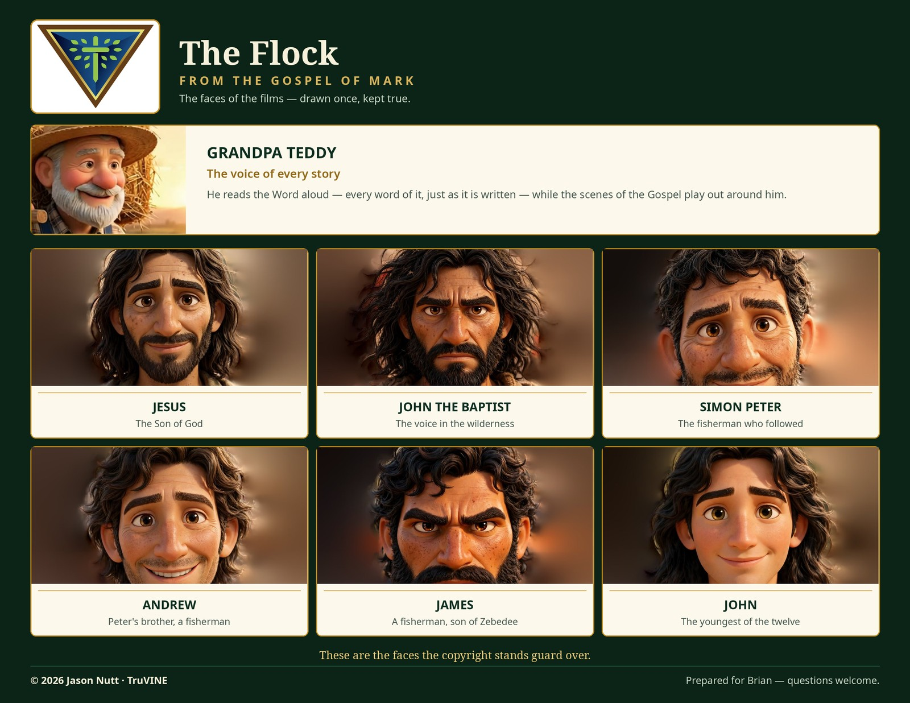
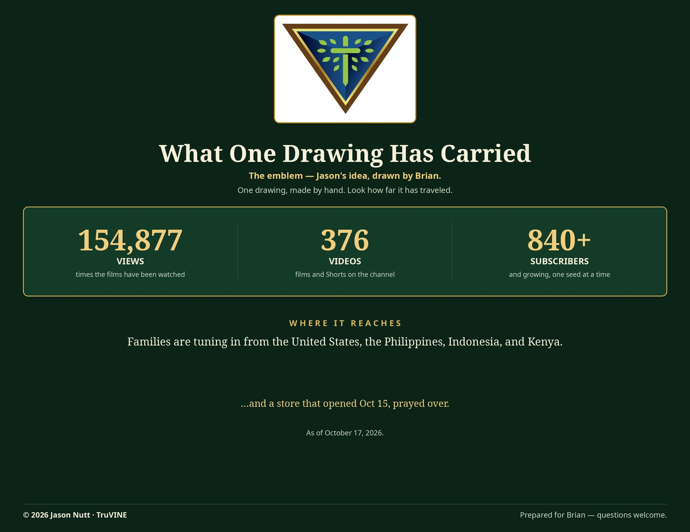

First
The Note
I believe you once asked me if my work was protected. I didn’t have a good answer, so I went and got one.
First page is the answer — how the copyright actually works, in plain pictures. The notices are already up on our pages; the filing comes next.
Second is the flock — the faces of the films, the ones all this stands guard over. Teddy’s in there too. He tells every story.
Third is what your drawing has carried. That emblem started with your hand, Brian. Look how far it’s gone.
Last page is just where we stand, plain and simple. Nothing dressed up.
Thanks for asking. It needed asking.
— Jason
(P.S. The résumé board travels as its own link — I’ve got that for you too.)
The Answer
The Lock
How the work is protected.
![An illustrated board titled ‘The Work Is Ours — How Copyright Protects What We Make.’ Its big line reads: ‘The moment we make something, the law says it’s ours. Nobody can take it and call it theirs.’ Five picture cards show what is covered: the film, the characters, Grandpa Teddy, the emblem — protected a different way, as our brand mark, with the line ‘Drawn by Brian — from Jason’s idea’ — and the writing. A section explains registering the work like recording a deed: it doesn’t make it more ours; it makes it provable and gives it teeth. The filing order is the film, the characters, Grandpa Teddy, then the writings. At the bottom, a dedication reads: ‘Getting all this protected — the idea started with Brian. He said something about it once, and he was right.’](assets/board-copyright.jpg)
What It Guards
The Flock
The faces of the films.

How Far It’s Gone
The Fruit
What one drawing has carried.

Last
Where We Stand
The plain status — nothing dressed up.
The Film
Mark, chapter 1 is built and in final review. It was made the slow way — one cast of faces, every scene crowned still by still, and Teddy reading the whole chapter word for word.
Nothing gets published until Jason has watched it, tested it against Scripture, and blessed it.
The Doors — All Live
- The Front Porch — jnutt367.github.io/truvine/porch/
- The Family Wall — jnutt367.github.io/truvine/family-wall/
- Meet the Cast — jnutt367.github.io/truvine/cast/
- The Field Report — jnutt367.github.io/truvine/field-report/
- The Store — truvine.printify.me
The Copyright
The © notices went up on every public page on October 17. Next comes registration — one short session at the Copyright Office: the film first, then the characters, Teddy, and the writings.
The emblem’s own protection is a trademark. That one sits a little further down the road.
Proud of the work, not boastful — it all belongs to the Lord anyway.